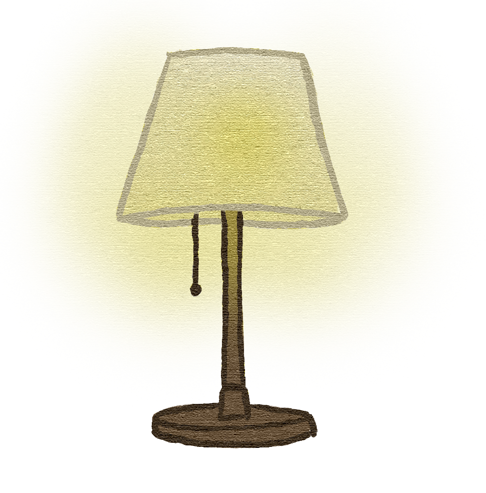

Thank heavens you’re here. We need your help to clean up this school! Find all the violations in this cafeteria and click on them to capture them. Good luck!
This is your Map. Use it to navigate around the different cafeteria areas.
This keeps track of the people you need to talk to. Click on workers to interact with them!
You Have Found All The Health Code Violations!
Hurry now, brave inspector. We have many more schools to go through!
You Found A Health Code Violation!
Rats
Wild rats carry many diseases that can contaminate food. They are most often found in Manhattan and the Bronx. In the Bronx, they are found in 10.10% of public schools, or 310 schools.
You Found A Health Code Violation!
Inadequate lighting
Inadequate lighting can lead to injuries due to minimized range of vision This is most often found in Staten Island and the Bronx. In the Bronx, it is found in 3.60% of public schools, or 110 schools.

You Found A Health Code Violation!
Filth Flies
Filth flies carry diseases and can lay eggs in food, which hatch into maggots. They are most often found in Manhattan and Queens. In the Bronx, they are found in 2.80% of public schools, or 87 schools.
You Found A Health Code Violation!
Facility not vermin proof
While not as bad as actual mice and rats, this is still an invitation for them. This problem is most often found in Manhattan and Queens. In the Bronx, this is found in 10.70% of public schools, or 328 schools.
LUNCH LADY ELEANOR
A hand washing sign? Sweetheart, we barely have enough money in the budget for sinks.
You Found A Health Code Violation!
No hand washing sign
Hand washing reduces germs and chemicals on hands before eating. This is most often missing in Manhattan and the Bronx. In the Bronx, they are found in 10.10% of public schools, or 310 schools.
You Found A Health Code Violation!
food not protected from contamination
Food left out in sub-optimal temperatures can be cause many illnesses. This is most often found in Manhattan and Brooklyn. In the Bronx, it is found in 2.70% of public schools, or 83 schools.
You Found A Health Code Violation!
Light bulb not shielded or shatterproof
Light bulbs unprotected or improperly built can lead to burns or shattered glass. These are most often found in Staten Island and Manhattan. In the Bronx, it is found in 3.70% of public schools, or 353 schools.
You Found A Health Code Violation!
Surface improperly constructed
Food left out on surfaces not constructed for food can become hazardous. This is most often found in Staten Island and the Bronx. In the Bronx, it is found in 32.70% of public schools, or 1007 schools.
CHEF
What’s the big deal? So what I don’t have a certificate? Who cares? I got 800 kids to feed, MOVE!
You Found A Health Code Violation!
Food Protection Certificate not held by supervisor
These certificates are mandatory for serving food in NYC. They are most often missing in Queens and the Bronx. In the Bronx, they are found in 2.70% of public schools, or 83 schools.
You Found A Health Code Violation!
Plumbing not properly installed
Poor water quality and hazardous material in water are the biggest threats posed by improper plumbing. It is seen most often in Staten Island and the Bronx. In the Bronx, they are found in 14.10% of public schools, or 433 schools.